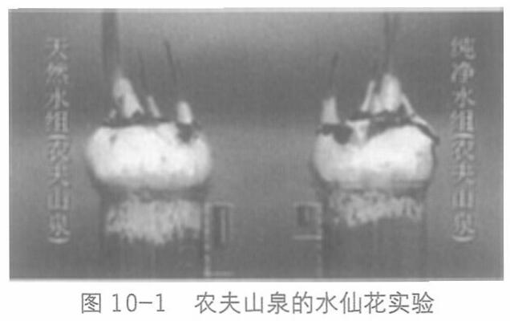

水中的水仙花根须只长出2厘米，而天然水中的长出了4厘米； 40天后，纯净水中的水仙花根须重量不到5克，而天然水中的超过了12克(见图10-1)。

水中有没有矿物质，用户一般都是无感知的，而农夫山泉让这种用户无法基于自身味觉、体感建立感知的特性，通过科学实验、对比数据和对比强烈的画面，在视觉和认知里创造了用户感知。
实验的结果在媒体上公布后，就成了一组强有力的信息包，引发了舆论场和社会的强烈反应。
这一举动直接打击了纯净水这个品类，是公然与全行业为敌。之后，娃哈哈、乐百氏等近70家企业统一行动，集体讨伐农夫山泉。最终农夫山泉败诉，因“不正当竞争”被罚款20万元。
同时，纯净水方也给出信息来进行对抗。
据说宗庆后看到水仙花这个实验之后说：粪水里的水仙花长得也很快，能说明粪水就更健康吗?
宗庆后还说过，娃哈哈的纯净水纯净度很高，是长年给各大医学实验室做实验用的水。
268